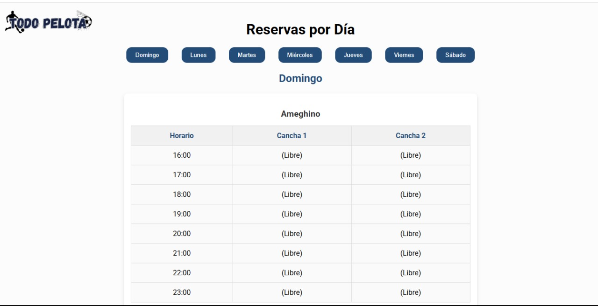
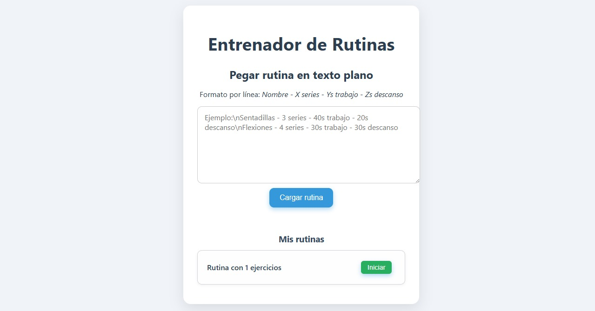

Escuela Ejército de Los Andes N.º 4-117
Técnico Electromecánico.
Técnico Electromecánico | Soporte IT y Redes
Técnico Electromecánico con experiencia en mantenimiento, operaciones de campo y telecomunicaciones. Orientado al diagnóstico de fallas, montaje y puesta en marcha en instalaciones eléctricas y sitios remotos. Complemento mi perfil con soporte técnico informático, redes, mantenimiento de hardware y software, programación, herramientas de oficina y tareas administrativas.
Técnico Electromecánico.
Instalación, configuración y mantenimiento de redes y equipos.
Formación introductoria en programación, lógica y resolución de problemas con Python.
Buen entendimiento de documentación técnica escrita.
Implementé un servidor VPN para ingresar de forma remota y verificar equipos de la red operativa.
Localicé y resolví una falla HFC mediante mediciones y seguimiento del problema directamente en el nodo.
Armado de tableros, conexionado, borneras, circuitos de potencia y comando.
Tensión, corriente, continuidad y aislamiento con multímetro y pinza amperimétrica.
LOTO, HSE/SSMA, seguridad eléctrica y trabajo en altura.
FTTH, HFC, ISP, radioenlaces, nodos, routers y switches.
Diagnóstico, reparación y mantenimiento de computadoras, instalación de software, configuración de Windows y Linux y asistencia a usuarios.
Mantenimiento de PC, cambio y verificación de componentes, reparación de celulares y resolución de fallas en periféricos.
HTML, CSS, JavaScript y Python. Creación y mantenimiento de sitios web con apoyo de herramientas de inteligencia artificial.
Configuración de routers, redes internas, direccionamiento, conectividad, acceso remoto mediante VPN y soporte a equipos de red.
Microsoft Office, Excel, Word, PowerPoint, Google Workspace, correo electrónico, carga de datos y organización de documentación.
Control y actualización de información, elaboración de reportes, gestión de archivos, seguimiento de tareas y atención de consultas.
Manejo de SCADA, monitoreo de equipos, revisión de alarmas y registro de intervenciones técnicas.
Responsabilidad, comunicación y colaboración en tareas de campo.
Análisis de fallas, medición, verificación y restablecimiento del servicio.
Sitio web responsive para consultorio odontológico.
Aplicación web para reserva de canchas deportivas.

Panel de gestión de disponibilidad y reservas.

Herramienta web para cargar y ejecutar rutinas de entrenamiento.
Busco posiciones de mantenimiento, electromecánica, operaciones de campo y telecomunicaciones, además de oportunidades en soporte IT, redes, asistencia administrativa y trabajo remoto.